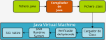
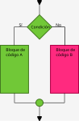
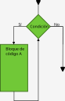

Tema 2: Introducción a Java
Hola mundo
¿Cómo escribir un programa Java?
Un programa en código Java no es más que un documento de texto con sentencias y sintaxis de Java que puedan ser comprendidas por el compilador.
Este fichero de código fuente ha de tener la extensión .java para que pueda ser reconocido por los IDE (Entornos integrados de desarrollo).
Así, para crear nuestro primer programa Java lo único que hemos de hacer es escribir las siguientes líneas de código en un fichero de nombre HolaMundo.java (es necesario el nombre HolaMundo como explicaremos más adelante):
public class HolaMundo {
public static void main(String[] args) {
System.out.println("Hola mundo.");
}
}
¿Cómo compilar / ejecutar un programa?
¿Qué significa compilar?
Compilar un programa consiste en convertir el código fuente en código binario. El código fuente es el programa tal como nosotros lo hemos escrito en el editor de código, de manera que es legible por los seres humanos. Por el contrario el código binario normalmente es únicamente comprensible por el Sistema Operativo que puede procesarlo y enviarlo al procesador del ordenador para que se ejecuten las instrucciones que escribió el programador.
Como podemos ver el código binario (o simplemente binario) de un programa es dependiente del sistema operativo y el tipo de procesador (arquitectura) de la máquina en la que se quiera ejecutar.
En Java este proceso es algo diferente. En lugar de compilar para un sistema operativo / arquitectura lo que hace el compilador de Java es crear un binario para ser ejecutado en la máquina virtual de java (JVM). Esta máquina virtual de java no es más que un programa que entiende el código binario de Java (Java bytecode).
De modo que un programa Java, una vez compilado, podrá ser ejecutado por cualquier JVM. Lo que necesitaremos para poder ejecutar un bytecode de Java en cualquier arquitectura es una JVM que corra sobre ella.

Entonces... para ejecutar un programa Java ¿Qué?
Para ejecutar un programa Java hemos de seguir los siguientes pasos:
- Compilar a bytecode de Java:
javac -verbose HolaMundo.java. - Enviarle el bytecode de Java (
HolaMundo.class) a la máquina virtual:java HolaMundo.
Nota: al ejecutar el segundo paso no se ha de incluir el .class al indicar la clase que queremos ejecutar.
Codificación en compilación
El compilador de java javac por defecto interpreta que los .java que le pasamos están codificados como ASCII por lo que, si tenemos tíldes o "ñ" en nuestro código se mostrarán incorrectamente al ejecutarlo. Por ejemplo, si tenemos un archivo (codificado en unidcode) con el sugiente código fuente:
public Class MiClase {
public static void main(String[] args) {
System.out.println("España es así.");
}
}
y lo compilamos con: javac .\MiClase.java.
Obtenedremos la clase MiClase.class, que al ejecutar con el comando java MiClase mostrará por pantalla España es asÃ..
Para corregir esto hemos de indicarle al compilador que nuestro código fuente está codificado con formato unicode de la siguiente manera: javac -encoding utf8 MiClase.java.
Si a continuación ejecutamos el programa:
java MiClase
España es así.
Clases, JARs, CLASSPATH y otras cosas de meter
Cuando empecemos a programar usando el modelo de orientación a objetos nos encontraremos creado librerías para nuestro proyecto, así como utilizando librerías de terceros. Para que javac y luego java puedan localizar las liberías que utilizamos (en definitiva los archivos .class) hemos de indicárselo y para ello disponemos de dos formas (cada una con sus cosas):
- Variable de entorno
CLASSPATH. NO RECOMENDABLE. - Opciones
-cp,-classpaho-class-path(son sinónimos) tanto parajavaccomo parajava.
Variable CLASSPATH
La variable CLASSPATH contendrá una lista de uno o más directorios. Estos directorios son en los que javac y java buscarán las clases que indiquemos en las sentencias import de nuestro código. Comunmente hemos de indicar el directorio lib de nuestra instalación de JDK (C:\Program Files\Eclipse Adoptium\jdk-17.0.4.101-hotspot\lib en nuestro caso), también añadiremos el directorio actual . para que se puedan encontrar las clases de nuestro directorio. Además deberemos de indicar el directorio a donde vayamos a guardar las clases de terceros / librerías que vayamos a utilizar.
Si hacemos esto en principio no deberíamos de tener ningún problema... NINGÚN PROBLEMA** (JA JA JA JA JA...).
Opción -cp
La opción -cp sobreescribe a CLASSPATH. De manera que si usamos -cp el valor que tenga CLASSPATH será irrelevante.
Con esta opción indicamos explícitamente los directorios donde se encontrarán las clases que usamos en nuestro proyecto.
La sintaxis en la siguiente:
- Linux:
-cp <directorio de clases 1>:<directorio de clases 2>:.... - Windows
-cp <directorio de clases 1>;<directorio de clases 2>;....
Nótese la diferencia en el separador de directorios ":" en sistemas Linux y ";" en Windows.
Además de esto es conveniente entrecomillar la lista:
javac -cp './lib;.' ./MiClase.java
Whiskey in the JARs
Los archivos .jar consisten fundamentalmente en la estructura de directorios-paquetes de un conjunto de clases de Java (= librerías).
Lo más importante que hemos de terner en cuenta es que, a efectos del CLASSPAH y la opción -cp, un JAR es un directorio.
Repito.
UN .jar CUENTA COMO SI FUESE UN DIRECTORIO.
Esto implica que si hemos descargado un archivo jar de terceros para usar en nuestro proyecto hemos de:
- Añadirlo a nuestra variable
CLASSPATH(CLASSPATH=C:\libs\libreria_descargada1.jar;C:\libs\libreria_descargada2.jar). - Indicarlo explícitamente en la opción
-cp:-cp 'C:\libs\libreria_descargada.jar;.. - Descomprimirla dentro de un diretorio incluido en
CLASSPATHo-cp. - O decirle a nuestro EID que lo incluya. LA MÁS RECOMENDABLE.
Creación de archivos JAR
Un archivo .jar es un tipo de archivo que se puede pasar a comando java para que lo ejecute como cualquier otra clase. Podríamos decir que un JAR contiene comprimida la estructura de directorios / paquetes y clases de una aplicación Java.
Comentarios
Cuando escribamos código en cualquier lenguaje hemos de tener presente que no seremos únicamente nosotros los que tendremos que entender y posiblemente modificar ese código. Para ello, cuando estimemos que algo puede ser confuso (para nuestro yo futuro o para otra persona), es conveniente comentar el código.
En Java hay tres tipos de comentarios:
- Comentario de una línea: Se indica escribiendo
//antes de comenzar a escribir el comentario.
int a = 10;
int b = 10;
int c = a + b; // Esto no hace falta ni comentarlo.
- Comentario de varias líneas: Se indica escribiendo
/*al comienzo de las líneas de comentario y*/al final:
/* Y esto es un ejemplo de como se puede escribir un comentario
que se extienda várias líneas. */
String str = "Hola mundo";
System.out.println(str);
- Comentarios para Javadoc: Los comentarios para Javadoc son similares a los comentarios para várias líneas pero comienzan con
/**en lugar de/*.
Variables
Una variable es un nombre que estará enlazado con un espacio de memoria donde se podrá almacenar algún dato.
Para poder utilizar una variable en Java habrá de declararla antes.
Declaración de una variable
Para declarar una variable lo primero que hemos de indicar es el tipo de dato de la misma. El tipo de dato determina que tipo de valores podrá contener la variable.
A continuación indicaremos el nombre de la variable.
Limitaciones en nombres de variables
La reglas que rigen el nombrado de las variables son las siguiente:
- Los nobres de variables distinguen entre mayúsculas y minúsculas (La variable
Holaes distinta dehola). - Una variable ha de empezar con un caracter unicode, el síbolo
$o el carácter subrayado_. - La convención dice que el nombre de una variable ha de empezar con una letra minúscula (y no con
$o_aunque esté permitido). - No se permite el uso de espacios en blanco.
- Si el nombre elegido para la variable consta de varias palabras ("codigo" "libro" por ejemplo) se pone en mayúsculas la primera letra de cada palabra a partir de la primera ("codigoLibro").
- Si la variable almacena una constante, se escribe todo el nombre con MAYÚSCULAS y se separarán las palabras mediante el carácter subrayado
_("CODIGO_LIBRO").
Finalmente, y de manera opcional, podremos asignar un valor inicial al la variable utilizando el operador de asignación =.
<tipo de dato> <nombre de la variable> [= valor];
int x = 1;
float y = 1.5;
String texto = "Hola mundo.";
Variables inferidas: var
Desde la versión 10 del JDK también se pueden declarar variables utilizando la palabra clave var:
var a = 10;
En este caso el tipo de la variable a de determinará en el momento en que Java vea que se le está asignando el valor 10 (entero). Es decir, la máquina virtual infiere el tipo de la variable y se lo asigna.
Una vez se le a asignado un tipo la variable a sólo podrá contener valores de dicho tipo.
En nuestro ejemplo el siguiente código daría error de compilación:
var a = 10;
//...
a = 1.5;
Type mismatch: cannot convert from double to int".
Ya que en Java los números con cifras decimales se consideran del tipo double (número en coma flotante de doble precisión) y a será una variable de tipo int ya que le asignamos un valor entero.
Tipos de datos
Java es un lenguaje de tipado estático. Esto quiere decir que hay que indicar siempre el tipo de dato de una variable.
Por esto se dice también que Java es fuertemente tipado.
Un tipo de dato es una declaración mediante la que se indica el contenido que podrá tener una variable.
Consecuencias
Si intentamos guardar en una variable un dato que no encaja con el que hemos indicado en la declaración se producirá un error de compilación.
int x;
x = 12.5;
.\tarea1\MiNombre.java:4: error: incompatible types: possible lossy conversion from double to int
x = 1.2;
^
1 error
Tipos primitivos
Estos tipos de datos de base tienen como única característica que no son objetos. El resto de elementos del lenguaje Java son objetos.
- byte: números enteros que se pueden representar mediante un byte (8 bits). Es decir, los números entre el -128 y el 127 (ambos inclusive).
- short: números enteros de 16 bits. Los valores enteros entre -32 768 y 32 767.
- int: similar a los anteriores pero usando 32 bits ($-2^31$)
- long: lo mismo pero con 64 bits.
- float: números reales expresados mediante 32 bits.
- double: números reales representados mediante 64 bits.
- boolean: dos valore (lógicos) posibles: true y false. Utiliza un bit de datos.
- char*: representa un carácter Unicode de 16 bits.
Nota
Java toma cualquier dato entero como 10.5 por defecto como double (aunque pueda ser alamacenado sin problemas como float). Lo normal es que siempre se use double cuando trabajemos con números reales.
¿Y no hay más tipos de datos?
El resto de tipos de datos en Java son objetos.
Algunos tipos de datos, aunque sean objetos, tienen comportamientos especiales para facilitar la escritura de código. Un ejemplo son los tipos String y Array.
Tipo String
El tipo String se utiliza para almacenar y realizar operaciones sobre cadenas de caracteres.
Para crear una variable que haga referencia a una cadena de caracteres escribiremos los siguiente:
String str = "Hola mundo.";
Esta es la forma abreviada de escribir el código. La forma correcta teniendo en cuenta que String es un objeto sería:
String str = new String("Hola mundo.");
Tipo Array
El tipo array (que veremos en detalle más adelante) consiste en una lista de tamaño fijo de elementos del mismo tipo.
// Para definir un array de 10 elementos int:
int[] enteros = new int[10];
// Para crearlo con valores iniciales:
int[] tresEnteros = {1, 2, 3};
Nombres de variables
Los nombres de las variables han de cumplir las siguientes reglas:
- Han de empezar por minúscula (opcional pero recomendado), subrayado o $.
- Han de estar compuestas por caracteres Unicode.
- No pueden coincidir con el nombre de las palabras reservadas del lenguaje.
Operadores
Operadores postfijo / post-(in/de)cremento
Estos operadores valen para incrementar (++) o decrementar (--) en una unidad el valor de una variable.
También se llaman incremento (decremento) diferido.
int x = 1;
x++; // x pasa a valer 2.
System.out.println(x); // Se mostrará el valor 2.
x--; // x pasa a valer 1.*
Operadores prefijo / pre-(in/de)cremento
Son similares a los anteriores pero con menor prioridad:
int x = 1;
++x; // x pasa a valer 2.
--x; // x pasa a valer 1.
La diferencia entre los operadores unarios pre y post incremento / decremento es la siguiente:
- pre-incremento/decremento se modifica directamente el valor de la variable.
- post-incremento/decremento primero se usa el valor actual de la variable y a continuación se incrementa.
Veámoslo con un ejemplo:
// Pre-incremento.
int x = 0;
int y = 0;
int z = ++x + ++y;
// z tiene el valor 2.
// x e y tienen el valor 1.
System.out.println("z = " + z);
System.out.println("x = " + z);
System.out.println("y = " + z);
// Post-incremento.
int x = 0;
int y = 0;
int z = x++ + y++;
// Primero se usan los valores ACTUALES de x e y para la operación (suma).
// por lo que z tomará el valor 0.
// A continuación se incrementan.
System.out.println("z = " + z);
System.out.println("x = " + z);
System.out.println("y = " + z);
Operadores aritméticos
Los operadores aritméticos sirven, como su nombre indica, para realizar operaciones aritméticas. La prioridad de ejecución entre ellos es la común entre las calculadores y el uso general:
int a = 10; // Operador de asignación =. Asigna a una variable un valor.
int b = 20;
int d = 30;
d = a * b; // Asignamos a c el producto de a por b.
d = a / b;
d = a % b; // Operador módulo que guarda en c el RESTO de la division de a entre b.
d = a + b * c; // Primero multiplicamos b por c y al resultado le añadimos a.
d = a - b * c; // Le restamos a a el producto de b por c.
Operadores a nivel de bit
<<: Desplaza el número a su izquierda tantas posiciones como indique el número a su derecha:
int a = 1; // 0001 en binario.
int b = 3;
int c = a << b;
System.out.println(c); // Mostrará el valor 8 (1000)
>>: Igual que el anterior pero desplazando a la derecha:
int a = 8; // 1000.
int b = 3;
inc c = a >> b;
System.out.println(c); // Mostrará 1 en pantalla.
-
&: And a nivel de bits. -
|: Or a nivel de bits. -
^: Xor a nivel de bits.
Operadores realacionales
Estos operadores sirven para comparar dos valores. Devolverán true o false dependiendo de si la comparación es cierta o no.
==: El operador igual compara si dos valores son iguales.
int a = 1;
int b = 2;
System.out.println(a == b); // Mostrará false.
System.out.println(a == b - 1); // Mostrará true.
!=: El operador distinto devolverá cierto cuando los dos valores comparados sean distintos:
int a = 1;
int b = 2;
System.out.println(a != b); // Mostrará true.
System.out.println(a != b - 1); // Mostrará false.
>y>=: Los operadores mayor y mayor o igual realizan dicha comparación:
int a = 0;
int b = 10;
int c = 10;
boolean resultado = a > b; // resultado será igual a false.
resultado = b >= c; // resultado será igual a true.
<y<=: Son similares a los anteriores.
Operadores lógicos
Estos operadores sirven para:
- negar (operador
!) un valor:
boolean t = true; // Asignamos verdadero a t.
boolean f = !b; // Asignamos no verdadero (= falso) a f.
System.out.prinln(f); // Mostrará false por pantalla.
- Hacer la operación y (and) de dos valores (operador
&&):
boolean t = true;
boolean f = false;
System.out.println(t && f); // true && false es igual a false.
System.out.pringln(t && t); // true && true es igual a true.
- Hacer la operación o (or) de dos valores (operador
||):
Operador ternario
No es conveniente usarlo ya que vuelve el código difícil de seguir.
Tiene tres partes: (condición) ? (resultado si condición true) : (resultado si condición false);
int a = 10;
int b = 20;
System.out.println(a == b ? "a igual a b" : "a distinto de b."); // Mostrará "a distinto de b." por pantalla.
Operador de asignación
Sólo hay uno = y sirve para asignar un valor a una variable:
String a = "un valor";
String b = a;
boolean c = a == b; // ¿Cuál será el valor de c?
b = "un valor";
c = a == b; // ¿Y ahora?
b = new String("un valor");
c = a == b; // ¿¿Y AHORA??
INCISO: Entrada de datos
Para poder hacer ejercicios necesitamos interactuar con el programa o, al menos, poder indicar con qué datos va a trabajar (datos de entrada).
Para ello hemos de ver un par de formas en las que podemos pasar valores a nuestros programas.
Estas instrucciones van a ser muy superficiales, simplemente para poder realizar entrada de datos. Más adelante las analizaremos en más detalle.
Entrada por consola
Usando Console
Para leer de la consola (entrada por teclado) primero hemos de acceder a ella. Para hacer esto usaremos la clase Console:
import java.io.Console;
public class InputOutput {
public static void main(String[] args) {
Console c = System.console(); // Accedemos al objeto Console del sistema.
System.out.print("Dime tu nombre: ");
String nombre = c.readLine(); // Quedará esperando a que escribamos un texto y lo guardará en nombre.
System.out.println("¡Hola " + nombre + "!");
}
}
NOTA
Los datos leídos con readLine siempre será cadenas de caracteres. Para poder usarlos como números habrá que convertirlos en int, float, etc.
Para ello hemos de usar los métodos / funciones siguientes:
Integer.parseInt(): para convertir una cadena a un valor entero.Float.parseFloat(): para obtener un valor.Double.parseDouble(): ...
Veámoslo en un ejemplo:
import java.io.Console;
public class InputNumbers {
public static void main(String[] args) {
Console c = System.console(); // Accedemos al objeto Console del sistema.
// Guaramos lo escrito por teclado en numero.
String linea = c.readLine("Introduzca un número: ");
// Puesto que es una cadena (String) hemos de convertirlo al tipo
// que nos interesa.
int numero = Integer.parseInt(linea);
System.out.println("El valor " + linea + " + 10 vale " + (numero + 10) + ".");
}
}
Usando Scanner
Scanner es ligeramente distinto a Console. Es más flexible pues no sólo sirve para leer del teclado si no que también se puede asociar a:
- Una cadena de texto.
- Un fichero del sistema.
- La entrada por defecto del programa (teclado).
- A un socket (conexión a la que se pueden unir otros procesos).
Puesto que es más flexible es algo más complejo de utilizar y no ofrece tantas comodidades como Console para acceder a los datos introducidos por el teclado.
NOTA: Hay que tener en cuenta que es necesario cerrar el scanner cuando ya no lo vayamos a volver a utilizar.
Veamos un ejemplo de uso:
import java.util.Scanner;
public class PrimerosPasos {
public static void main(String[] args) {
String linea = null;
// La sentencia try (<recurso>) { // bloque }
// asegura que el recurso será cerrado (liberado) cuando termine el bloque.
try (Scanner input = new Scanner(System.in)) {
linea = input.nextLine();
}
System.out.println("Leído el texto: " + linea + ".");
// Si deseamos convertirlo a un valor entero:
int value = Integer.parseInt(linea);
System.out.println("El valor leído es: " + value + ".");
}
}
Parámetros / Argumentos
Cuando creamos el método main podemos ver que a continuación sigue la siguiente secuencia (String[] args). Esta última parte está indicando el que método main recibe como argumento un array de cadenas (una lista de valores String) .
Este método será utilizado por la máquina virtual de Java para pasarle al programa los argumentos que indiquemos por consola en el momento de ejecutarlo.
Veámoslo con un ejemplo:
public class Argumentos {
public static void main(String[] args) {
System.out.println("El primer argumento fue: " + args[0]);
System.out.println("El segundo argumento fue: " + args[1]);
System.out.println("El tercer argumento fue: " + args[2]);
}
}
Si ahora compilamos e invocamos el programa:
javac Argumentos.java
java Argumentos Adiós Mundo Cruel
El resultado será:
El primer argumento fue: Adiós
El segundo argumento fue: Mundo
El tercer argumento fue: Cruel
Estructuras de control
En Java hay tres sentencias de control:
- Condicionales: Se determina la ejecución de cierto código fuente dependiendo de una condición:
if else/else ifswitch- Repetitiva: Se repetirá una secuencia de código tantas veces como se indique o hasta que se cumpla (o deje de cumplirse) una condición:
forwhiledo ... while- Salto incondicional: Se utilizan principalmente para saltar o salir de la ejecución de una iteración de un bucle:
breakcontinue
A una estructura de control repetitiva se la llama también bucle.
Cada una de las veces que se ejecuta el código de un bucle se dice que se ha producido una iteración.
Estructuras condicionales
if else / else if

Esta estructura permitirá que se ejecute un bloque de código u otro dependiendo de la condición.
Veámoslo con un ejemplo:
if (age >= 18) {
// Bloque de código A.
System.out.println("Eres mayor de edad.");
} else {
// Bloque de código B.
System.out.println("Eres menor de edad.");
}
Variantes
Una variante sería omitir la rama del else:
if (age < 18) {
System.out.println("Eres menor.");
}
Otra variante consiste en anidar ifs:
if (edad < 12) {
System.out.println("Eres muy jóven para la peli.");
} else if (edad >= 12 && edad < 18) {
System.out.println("Esta peli es para ti.");
} else {
System.out.println("Eres muy viejo para la peli.");
}
switch
La instrucción switch se puede realizar mediante if else consecutivos. La idea es que switch sea más legible.
La sintaxis de switch es la siguiente:
switch (valor_a_comparar) {
case valor_de_comparación_1:
// Código a ejecutar si valor_a_comparar == valor_de_comparación_1.
break;
case valor_de_comparación_2:
// Código a ejecutar si valor_a_comparar == valor_de_comparación_2.
break;
default: // Opcional.
// Código a ejecutar en caso de que se haya cumplido ninguna de las igualdades anteriores.
}
Un ejemplo del uso de switch sería:
Console c = System.console();
System.out.print("Instroduzca un número entre 1 y 3: ");
int value = Integer.parseInt(c.readLine());
switch (value) {
case 1:
System.out.println("El número introducido fue uno.");
break;
case 2:
System.out.println("El número introducido fue dos.");
break;
case 3:
System.out.println("El número introducido fue tres.");
break;
default:
System.out.println("El número introducido no estaba entre 1 y 3.");
}
Estructuras repetitivas (estructuras iterativas o bucles)
Estas estructuras determinan cuantas veces ha de repetirse un bloque de código. Puede indicarse un número fijo de repeticiones, como es el caso del for o establecer una condición para la repetición como es el caso del while y el do while.

for
El bucle for tiene la siguiente sintaxis:
for (<sentencia>; <condición>; <modificación de la condición>) {
// Bloque de código a repetir
}
así, un bucle for que muestre los números del 1 al 100 sertía:
for (int i = 1; i <= 100; i += 1) {
System.out.println(i);
}
while
El bucle while tiene la siguiente sintaxis:
while (<condición>) {
// Bloque a repetir mientras se cumpla la condición.
}
El mismo código que muestre los números del 1 al 100 con un bucle while sería:
int i = 1;
while (i <= 100) {
System.out.println(i);
i = i + 1;
}
do while
La única diferencia con los bucles anteriores es que en este siempre se ejecuta el bloque de código al menso una vez:
Su sintaxis es la siguiente:
do {
// Bloque a repetir
} while (<condición>);
El mismo ejemplo de los casos anteriores con un bucle do while sería:
int i = 0;
do {
System.out.println(++i);
} while (i < 100);
primera sentencia
Esta sentencia se ejecuta únicamente una vez antes de iniciar el bucle. Normalmente se declara y se le da valor a una variable que irá modificándose con cada iteración del bucle.
condición de continuación
Mientras se cumpla la condición indicada en esta sección el bucle seguirá repitiéndose. Normalmente es una comparación respecto a la variable declarada en la primera sentencia.
segunda sentencia
Esta sentencia se ejecutará cada vez que se ejecute una iteración del bucle. Normalmente modifica el valor de la variable declarada en la primera sentencia de modo que se acerque cada vez más al fin del bucle (a que la condición de continuación deje de cumplirse).
Un ejemplo con código real sería el siguiente:
for (int i = 0; i < 100; i++) {
// Mostremos una línea de texto por cada iteración del bucle.
System.out.println("Iteración número " + i);
}
Sentencias break y continue
En algunos casos es necesario alterar el normal funcionamiento de un bucle.
Imaginemos que normalmente un bucle se ejecutará diez veces pero que desamos que el bucle termine si el usuario introduce un valor que no sea válido. Para forzar la terminación del bucle, es decir, para romper la repetición usaremos la sentencia break.
En otros casos puede que no deseamos terminar el bucle definitivamente pero sí deseamos saltar el resto del código y pasar a la siguiente iteración (o repetición) del bucle. Para ello hemos de usar la sentencia continue.
break
Veamos algunos ejemplos del funcionamiento de la sentencia break de terminación de un bucle:
Si deseamos terminar el bucle si encontramos el valor que no sea válido:
do {
// Imaginemos que hay un método que genera un valor.
int valor = generaValor();
// El método "esValido" devolverá "true" o "false" dependiendo de si el valor es o no válido.
if (!esValido(valor)) {
// Si el valor es no válido salimos fuera del bucle.
break;
}
// Código para procesar el valor.
// ...
} while (true);
// Código exterior al bucle.
// ...
continue
Veamos algunos ejemplos del funcionamiento de la sentencia continue de salto a la siguiente iteración de un bucle:
Si quisiésemos crear un blucle que se saltase las iteraciones múltiplo de tres podríamos escribir:
for (int i = 0; i < 10; ++i) {
if (i % 3 == 0) {
continue; // No saltamos todo el código hasta el principio del siguiente blucle.
}
System.out.println("Iteración número " + i + ".");
}
Formas de terminar un bucle
Todo bucle (en general) debería de disponer de algún mecanismo de terminación. Así, los bucles while y do while se repetirían mientras se cumpla una condición y el bucle for (y el for-each) se repetirían un número predeterminado de veces.
No obstante a veces es conveniente terminar un bucle antes de que se alcance la condición de terminación estándar. Para ello disponemos de varios métodos:
- Podemos usar la sentencia que acabamos de ver
break. Que nos moverá a la primera sentencia exterior al bucle. - Otra forma de terminar (si estamos dentro de un método) es retornar el resultado del método utilizando la sentencia
return. - Finalmente otra forma de terminar un bucle es terminar la ejecución del programa mediante la sentencia
System.exit(0).
Un ejemplo de la conveniencia de terminación anticipada de un bucle es cuando estamos comprobando si un valor se encuentra en un array. Para ello, en principio, hemos de recorrer todo el array comprobando posición a posición (imaginemos un array no ordenado). Pero una vez hayamos encontrado el elemento no necesitamos seguir comprobando el resto de elementos del array. Así un método que compruebe si un array contiene un elemento podría ser:
public static boolean contains(Object[] arr, Object buscado) {
for (Object obj : arr) {
// Si encontramos dos objetos iguales retornamos true
// (el objeto buscado está en el array).
if (obj.equals(buscado)) return true;
}
// Si hemos recorrido todo el array y no hemos econtrado el objeto
// buscado retornamos flase.
return false;
}